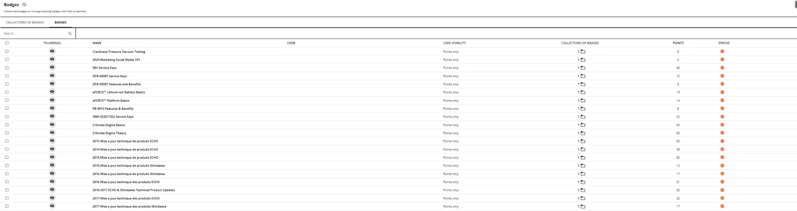

Supporting systems & operations
The work around the flagship case studies: analytics, localization, gamification, learner navigation, content governance and blended-learning operations.

Reporting architecture
Custom reporting combines learner, branch, dealer, learning-plan, course and completion data to support operational decisions.

Multilingual learning
French and Spanish technical learning is maintained as an operational content system, including programs serving thousands of learners.

Gamification & rewards
Badges, coins, reward thresholds, gift cards and giveaway mechanisms require both learner-facing design and administrative governance.

Navigation & discovery
Landing pages and service-training environments help learners understand where they are, what they need and what comes next.

Portfolio governance
A 365-course active portfolio spans e-learning, ILT, technical training, product content, annual programs and certification.

Learning mechanics
Points, visibility, collections and reward rules show how platform configuration influences participation and learner behavior.
Portfolio note: screenshots and metrics are presented as dated examples of work and system scale. Public versions intentionally omit learner-list PII. Company trademarks and platform interfaces remain the property of their respective owners.
See how the pieces connect.
Explore the broader portfolio or use the career brief for a concise view of experience and role fit.